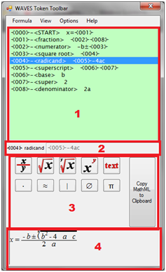

DIAGRAM Accessible Math Input Project
How to Use
Users can import MathML equations into the WAVES Toolbar, either by pasting from other applications or by opening pre-generated .mathml files. For example, a .mathml file for the quadratic formula (included with the WAVES Toolbar, as quadratic.mathml) inserts the quadratic formula into the WAVES Toolbar; the equation is then available for editing, reading aloud (via standard Microsoft voices), and visual checking by a sighted aide or instructor.

WAVES Toolbar main window
The WAVES Toolbar interface consists of the following parts (labeled in the image above):
-
The Formula List is a list-based representation of math, and is the primary way to view a mathematical construct as it is being composed. Each numbered line represents a single unambiguous mathematical element (for example, an arithmetic equation, part of a fraction, or a superscripted number). Taken together, all the lines in the Formula List constitute a single mathematical formula, equation, or construct.
Each line in the Formula List consists of three parts.
- The line number (for example, {001}) is used to identify the line and keep track of where you are in the math construct. The line number is found at the far left of each line, and the line numbers go up in sequential order. Line numbers are also used in the line content (see below) to point to other lines in the math construct.
- The token identifier (for example, <fraction> or <square root>) describes what part of a math construct the line contains.
- The line content consists of everything after the token identifier, and contains the actual numbers, symbols, and line number references that make up the math construct. The line content can be numbers and symbols, such as an arithmetic construct (for example, 2+12-5=9), but can also contain line numbers. This allows the creation of complex math structures, by splitting parts of an equation (like the numerator and denominator of a fraction) over several lines.
- The Line Box shows a description of the currently highlighted line in the Formula Box, and serves as a visual aid to help read individual lines of a math construct. The contents of the Line Box can be edited by clicking in the box where the inserted content is desired; changes made in the Line Box are automatically added to the Formula List.
- The Token Set displays various mathematical symbols, operators, and other characters (collectively known as tokens). The Token Set is usually set to display the most commonly used tokens for the math topic being worked on (for example, algebra or calculus), but it is fully customizable and can be modified to contain as many or as few tokens as the user desires. The Copy MathML to Clipboard button is always available in the Token Set; clicking this button copies the contents of the Formula List to the Windows Clipboard for use in other applications. The Copy MathML to Clipboard button performs the same function as the standard Ctrl-X key combination in Windows.
- The Text Box contains a graphical rendering of the MathML constructed from the current formula in the Formula List. The Text Box rendering shows the math construct as it might be written on paper by a sighted user, as opposed to the more highly encoded version shown in the Formula List. The Text Box contents update automatically as changes are made in the Formula List, and will display an error message if the Formula List contents contain any errors that cause the MathML rendering to fail. Clicking inside the Text Box places a cursor at that spot. You can then make changes to the math construct in the Text Box; these changes are automatically reflected in the Formula List.